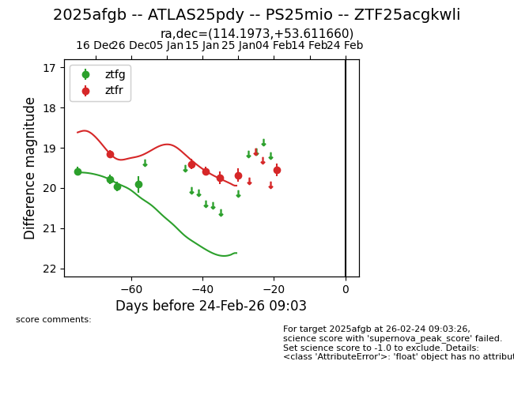
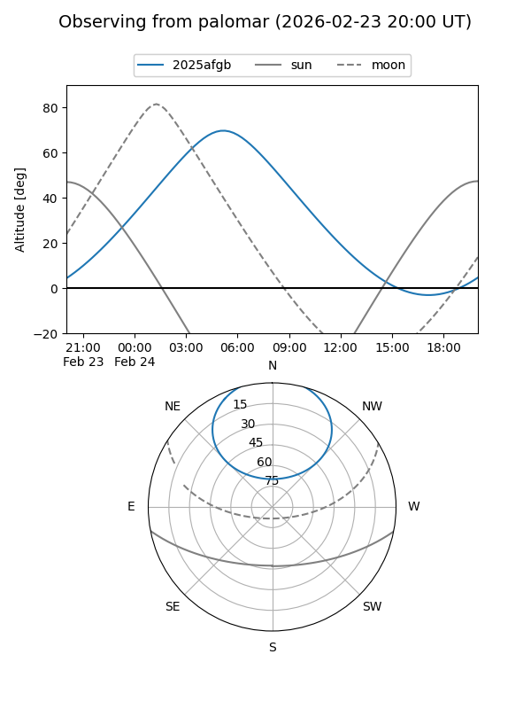
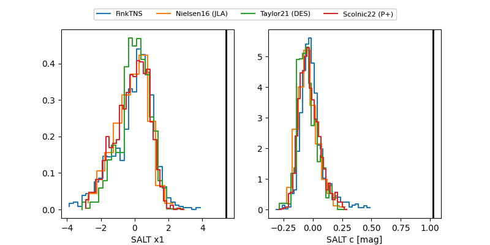

2025afgb
Target 2025afgb at 2025-12-31 16:59
Aliases and brokers:
FINK:
Lasair:
ALeRCE:
TNS:
YSE:
alt names
ZTF25acgkwli (ztf,fink_ztf)
2025afgb (tns,yse)
ATLAS25pdy (atlas)
Coordinates:
equatorial (ra, dec) = 114.1973,+53.61166
equatorial (HMS+DMS) = 07:36:47.35,+53:36:41.98
galactic (l, b) = (164.1821,+28.09098)
Flags:
Photometry:
last ztfg=19.91, ztfr=19.15
4 ztfg, 1 ztfr detections
Lightcurve

Visibility


Additional plots
